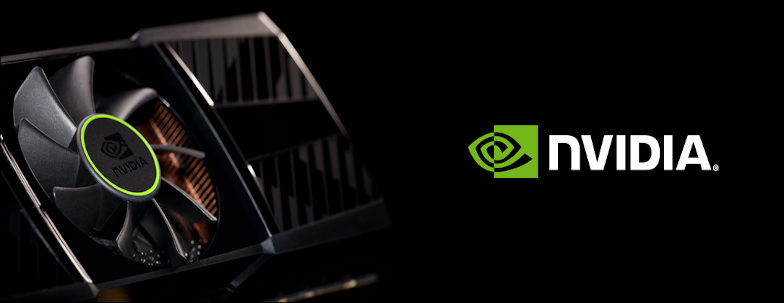
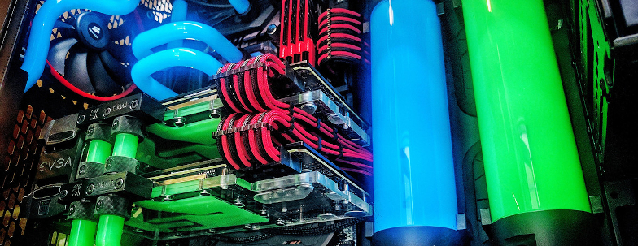

¿Cuándo voy a ser capaz de conseguir una gráfica de la nueva serie?
No es ningún misterio que la serie 3000 de NVIDIA se está haciendo difícil de conseguir,
sobretodo debido a la poca oferta y stock que ha habido a raíz de distintos problemas
en el último año. Y es que si nos ponemos a mirar, conseguir una tarjeta de la serie
3000 es casi imposible, a no ser que estés dispuesto a pagar muchas veces el doble o el
triple de su valor actual en la venta de segunda mano. Ahora la pregunta en cuestión es,
¿cuándo voy a ser capaz de conseguir una nueva gráfica sin que me cueste riñón y medio?
Vamos a echar un ojo a como se encuentra la situación actual y que opciones hay disponibles
además de esperar.

Qué razones existen para tener refrigeración líquida
La refrigeración líquida es una tecnología muy interesante que empezó a ponerse en práctica
en los ordenadores de casa alrededor del año 1996. La refrigeración líquida se basa en los principios
de la termodinámica: existe un líquido refrigerante que viaja a través de unos tubos, y un
ventilador por el cual se mueve el aire. La CPU se encuentra en contacto con un bloque que contiene
el líquido encargado de enfriar el procesador en cuestión. Gracias a una bomba, el líquido está en constante
movimiento. Este líquido llega al radiador, el cual se encuentra frío, haciendo que el calor del líquido
se transfiera al radiador.
Tras esta breve y escueta explicación del funcionamiento de la refrigeración líquida, vamos a
echar un ojo a que razones existen para tener refrigeración líquida. Obviamente si se dispone de suficiente
presupuesto deberíamos la refrigeración líquida va a ser una buena opción, pero este artículo está dirigido a
personas que tengan que tomar la decisión de si realizar una mayor inversión o no.